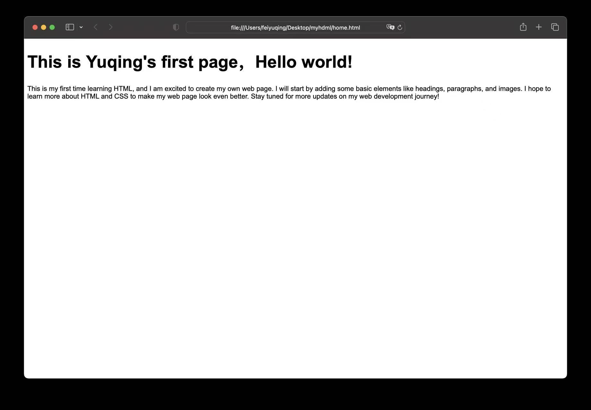
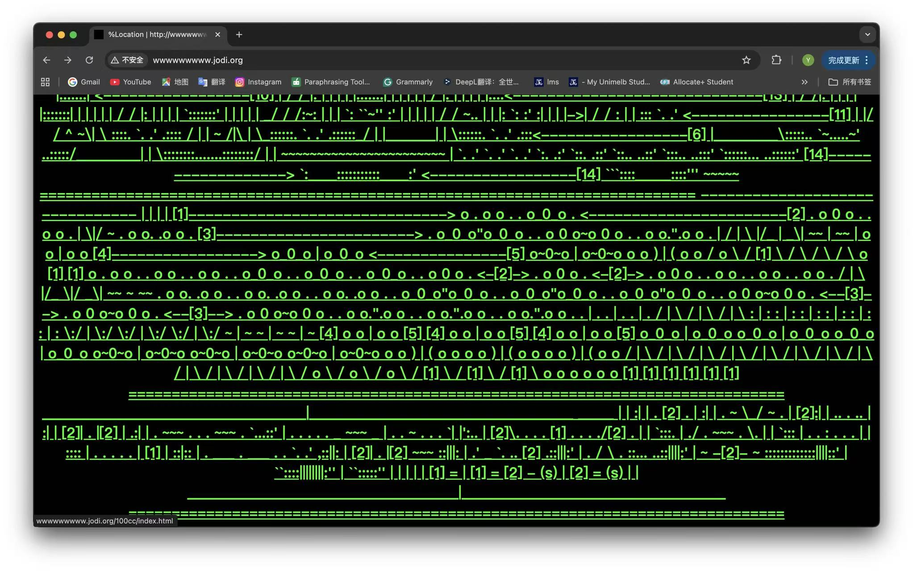

I recorded how I interacted with digital and physical interfaces over a 12-hour period. I tracked actions like tapping, scrolling, clicking, and pressing to see how often I use technology in my everyday life, often without even realising it. I then grouped the data into three categories: mobile, computer, and physical interfaces, to better understand my daily behaviour.
12-Hour Interface Gesture Study
Mobile
Tap × 328
Scroll × 66
Swipe × 120
Computer
Click × 146
Type × 50
Scroll × 38
Physical
Tap Myki × 1
Press button × 6
Swipe card × 2
This is my first time learning HTML, and I am excited to create my own web page.
I will start by adding some basic elements like headings, paragraphs, and images.
I hope to learn more about HTML and CSS to make my web page look even better.

This week, I watched the film Minority Report. The interface in the film is very visual and interactive. The character controls floating screens using hand gestures instead of a mouse or keyboard. This makes the interaction feel more immersive and intuitive. The system allows the user to move and organise data in a three-dimensional space through physical movement. Although it feels natural, it also requires accuracy and effort. Overall, the film shows a futuristic and engaging way of interacting with technology.
I also looked at the JODI website and found its interface very unconventional. The design appears chaotic and broken, with distorted text and minimal visual structure. Unlike traditional websites, it does not guide the user clearly. The interaction is unpredictable, as clicking on elements often leads to unexpected outcomes. This removes a sense of control and encourages exploration in a more experimental way. Rather than focusing on usability, the design creates confusion and curiosity, shaping a different kind of engagement with digital space.
